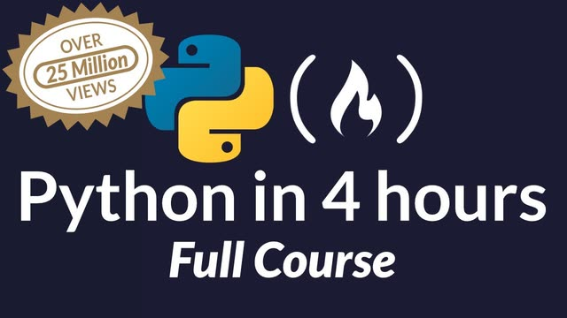
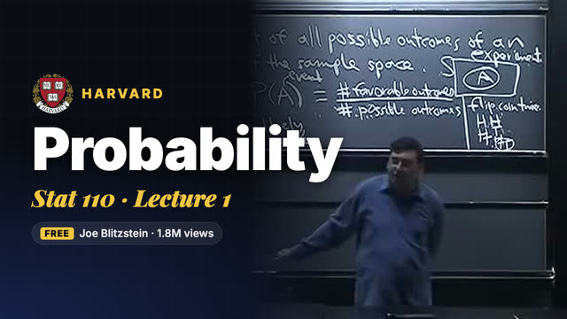
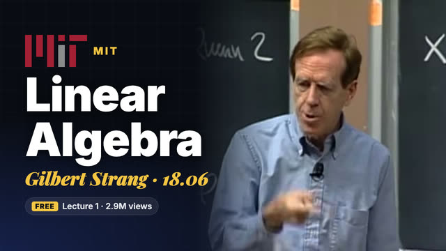
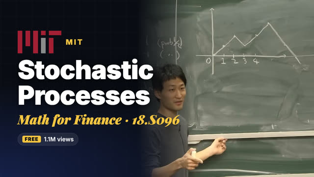
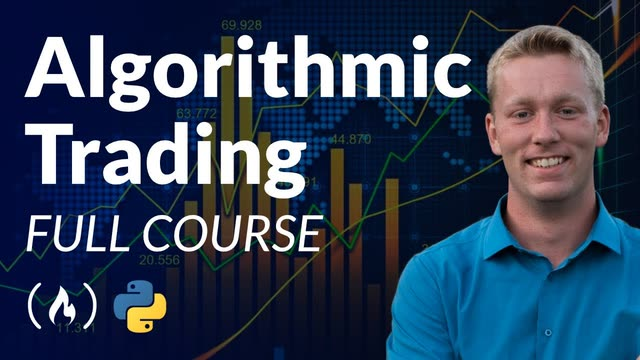
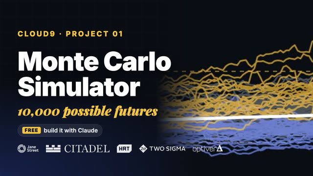

Everything from the reel, in order.
Every link is free, with no signup. Five are full lectures or courses on the official Harvard, MIT OpenCourseWare and freeCodeCamp YouTube channels. The sixth is a project from my own guide.
Don't binge all six. Do them in order: Python first so you can code along, then the maths, then the trading course, then build the project and put it on GitHub.

$0Python
Learn Python · Full Course for Beginners. Every quant desk runs on Python. This is the most-watched Python course on YouTube: variables to functions to classes, no experience needed. Get through it once and the rest of this list opens up.

$0Probability
Statistics 110 · Lecture 1: Probability and Counting. Quant trading is betting with an edge, and probability is how you measure the edge. Prof. Joe Blitzstein's Stat 110 is the class quants recommend most; the full course is 34 lectures on the same channel.

$0Linear Algebra
18.06 · Gilbert Strang · Lecture 1. Portfolios, risk models and machine learning are all matrices underneath. Gilbert Strang's 18.06 is the most-watched maths class on the internet for a reason.

$0Math for Finance
18.S096 · Topics in Mathematics with Applications in Finance · Stochastic Processes I. Random walks and Markov chains: the maths behind how prices move. MIT built this course for finance, with guest lectures from people working in the industry.

$0Algo Trading
Algorithmic Trading Using Python · Full Course. Now put the Python to work. Build three trading strategies from scratch: equal-weight S&P 500, momentum and value. Code along; don't just watch.

$0Project: Monte Carlo Simulator
Watching isn't enough; you need something to show. Simulate 10,000 possible years for a $100K portfolio and read the spread of outcomes. It's the first thing quant interviews probe: expected value, distributions and percentiles. The exact Claude prompt is in my guide, with four more projects after it.
All six links checked live on 5 Nov 2026. View counts as of the same day.
Turn the list into a path.
- 1
Finish the maths. Stat 110 (34 lectures) and 18.06 are the two full courses worth completing. Do the problem sets, not just the videos.
- 2
Build all five projects. After the Monte Carlo simulator, my guide has a backtester, a pairs trade, a factor model and an options pricer. Put each one on GitHub with a short write-up.
- 3
Practise the interview. Read Jane Street's own interview guide ↗ and do mental maths and probability puzzles daily.
- 4
Want a 7-day version? My 1-week quant roadmap adds the Jane Street mock interview and a machine-learning strategies course.
Honest notes.
The best quant education is already free.
I find free ways into quant finance (courses, projects, competitions) and check every link before I share it. Follow for the next one.